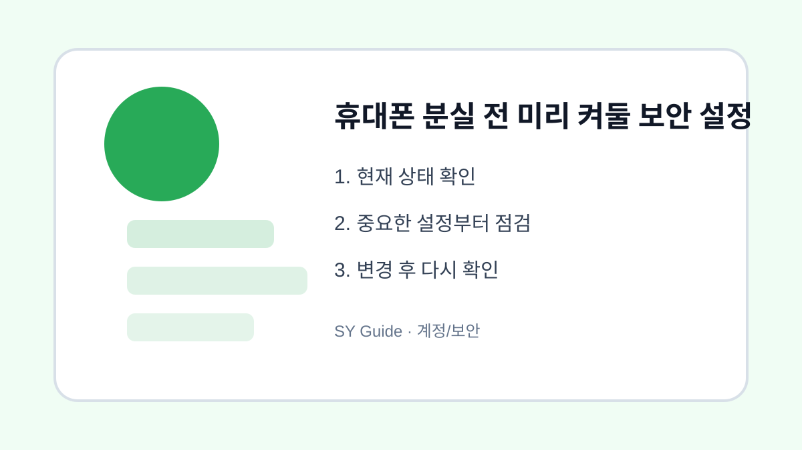

휴대폰 분실 전 미리 켜둘 보안 설정
휴대폰을 잃어버리기 전에 위치 찾기, 화면 잠금, 원격 잠금, 백업을 미리 설정합니다.

휴대폰을 잃어버린 뒤에는 할 수 있는 일이 제한됩니다. 위치 찾기나 원격 잠금 기능은 미리 켜두어야 도움이 됩니다. 화면 잠금과 백업도 분실 대비의 기본입니다.
위치 찾기 기능 켜기
안드로이드는 내 기기 찾기, 아이폰은 나의 찾기 기능을 확인합니다. 위치 서비스와 계정 로그인이 필요하므로 평소에 설정 상태를 봐두는 것이 좋습니다. 배터리가 꺼지기 전 마지막 위치가 도움이 될 수 있습니다.
공식 안내 확인
기기별 분실 대응은 제조사 안내를 따르는 것이 안전합니다. Google 계정의 내 기기 찾기 도움말이나 Apple 지원의 나의 찾기 안내를 공식 경로에서 확인해두세요.
| 설정 | 목적 | 주의점 |
|---|---|---|
| 화면 잠금 | 즉시 보호 | 쉬운 번호 피하기 |
| 위치 찾기 | 분실 위치 확인 | 미리 켜야 함 |
| 백업 | 자료 보호 | 정기 확인 필요 |
계정과 개인정보를 지키는 최종 점검
- 화면 잠금을 반드시 설정하기
- 내 기기 찾기 또는 나의 찾기 켜기
- 계정 비밀번호와 복구 정보를 최신화하기
- 사진과 연락처 자동 백업 확인하기
- 분실 시 통신사와 계정 잠금 절차 알아두기
분실 대비는 불안해서 하는 일이 아니라 자료를 지키기 위한 기본 준비입니다. 새 기기를 샀을 때 바로 확인해두면 좋습니다.
실제로 휴대폰을 잃어버렸을 때는 위치 확인, 원격 잠금, 통신사 분실 신고, 결제 앱 차단을 순서대로 진행하는 것이 좋습니다. 이 순서를 가족에게도 알려두면 본인이 바로 대응하기 어려운 상황에서도 도움을 받기 쉽습니다.
휴대폰 분실 전에 켜둘 보안 상황
휴대폰을 잃어버린 뒤에는 위치 찾기, 원격 잠금, 결제 차단을 바로 해야 합니다. 하지만 이 기능들은 미리 켜두지 않으면 사용할 수 없기 때문에 평소에 기기 찾기와 잠금 방식을 확인해야 합니다.
분실 대비 설정에서 흔한 실수
화면 잠금을 약하게 두거나 기기 찾기를 꺼둔 상태라면 분실 후 대응이 제한됩니다. 잠금번호, 생체인식, 계정 복구 정보, 원격 삭제 가능 여부를 함께 확인하는 것이 좋습니다.
휴대폰 분실 대비 보안을 먼저 확인해야 하는 이유
휴대폰을 잃어버린 뒤에는 위치 찾기와 원격 잠금 기능이 켜져 있어야 대응할 수 있습니다. 평소에 기기 찾기, 화면 잠금, 계정 복구 정보를 확인해 두면 분실 직후 결제 앱과 개인정보 노출 위험을 줄일 수 있습니다.
분실 대비 설정에서 자주 생기는 실수
화면 잠금만 설정하고 위치 찾기 권한이나 계정 비밀번호를 확인하지 않는 경우가 많습니다. 기기 찾기가 실제로 켜져 있는지, 다른 기기나 웹에서 로그인할 수 있는지까지 확인해야 합니다.
분실 대비 설정 후 다시 볼 부분
설정을 마친 뒤에는 가족에게 연락할 방법과 통신사 분실 신고 경로도 함께 정리해 두면 좋습니다. 지갑형 케이스를 쓰는 경우 카드와 신분증 분실 대응까지 같이 생각해야 실제 상황에서 움직이기 쉽습니다.